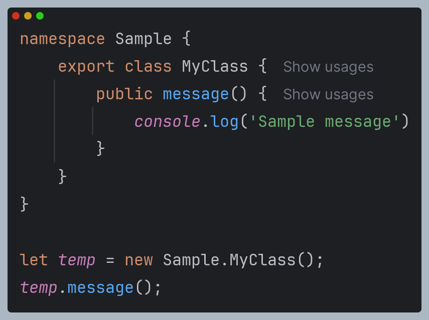
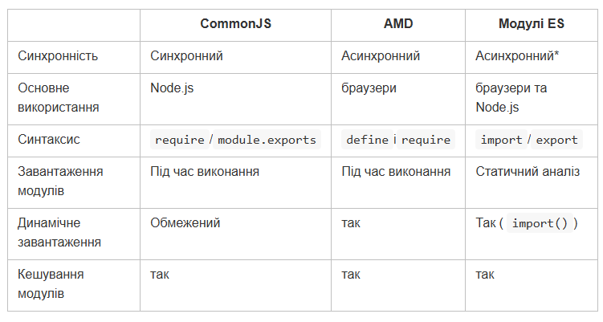
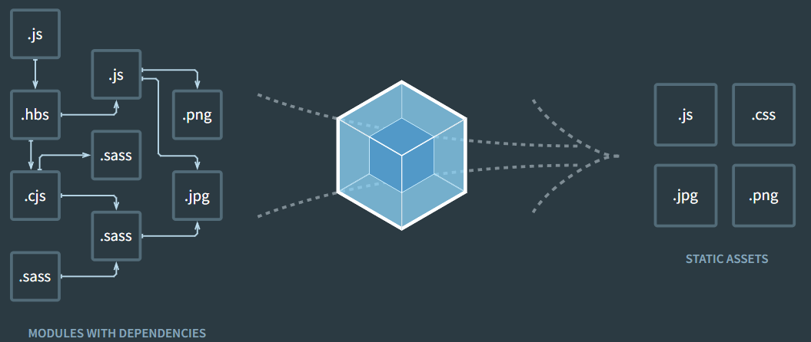

Простір імен - механізм для групування коду та визначення окремих областей видимості.
///<reference path="validator.ts">
tsc --outFile app.js main.ts
Компілюємо main.ts і всі пов'язані файли в один файл app.js
Модуль - окремий файл зі своєю областю видимості. Змінні, функції, класи та інші мовні конструкції, визначені в модулі, не доступні за його межами.
Файл, у якому на верхньому рівні перебуває import чи export, є модулем.
Залежності між модулями визначаються за допомогою ключового слова import.
Щоб імпортувати модулі, використовуються завантажувачі модулів, які відповідають за знаходження модуля та його завантаження перед виконанням програми.
Для завантаження модулів застосовуються спеціальні завантажувачі:
TypeScript підтримує роботу з модулями. Модулі є концепцією, яка принесена стандартом ES2015, проте в сучасних браузерах нативна підтримка модулів ще не реалізована.
Модулі певною мірою схожі на простори імен: вони можуть укладати різні класи, інтерфейси, функції, об'єкти. Також вони виділяються в окремі файли, що дозволяє зробити код програми більш ясним і чистішим, і разом з тим використовувати модулі в інших програмах.
Водночас модулі підключаються до програми не за допомогою тега script, а за допомогою завантажувача модулів.
Основні способи визначення залежностей між модулями:
Порівняння для трьох основних систем модулів JavaScript: CommonJS, AMD і ES Modules:
Webpack – інструмент для збирання JS файлів у пакети з дотриманням правильного порядку використання файлів. https://webpack.js.org/
